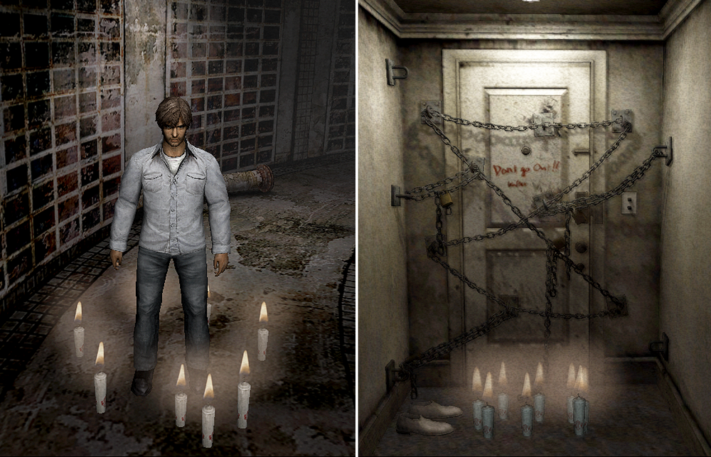
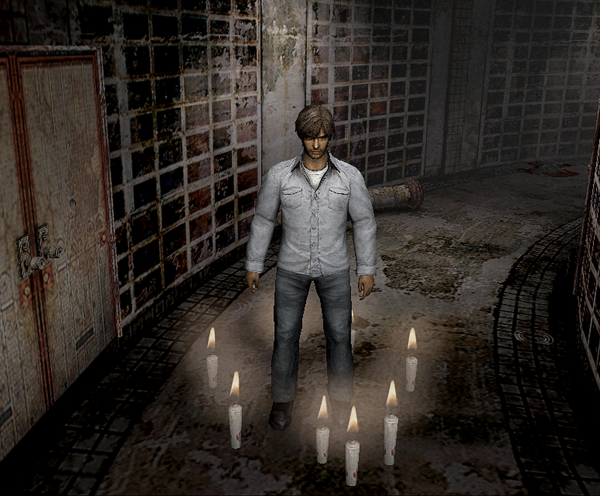
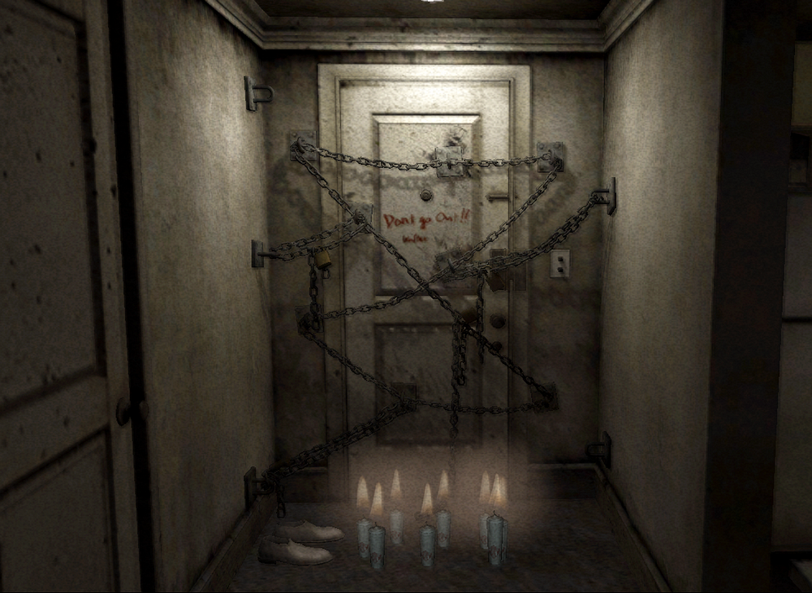
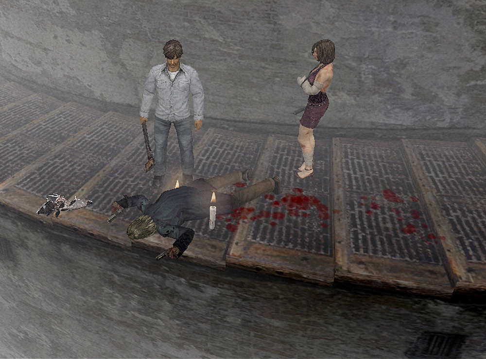
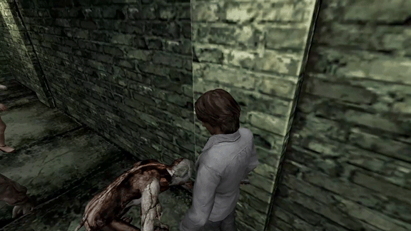
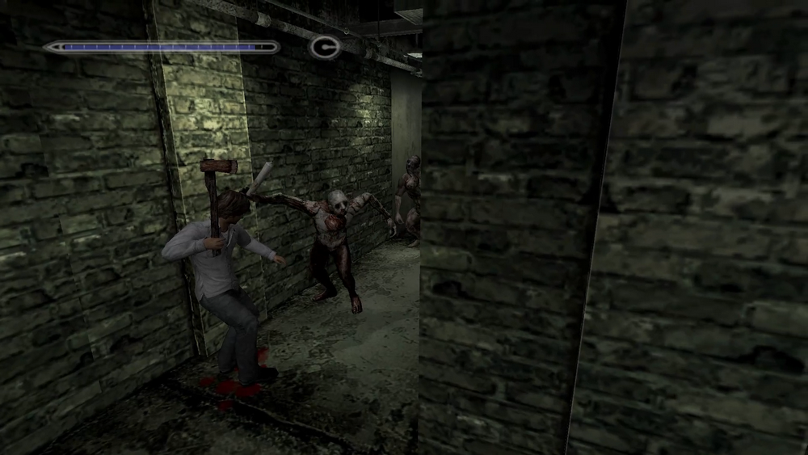
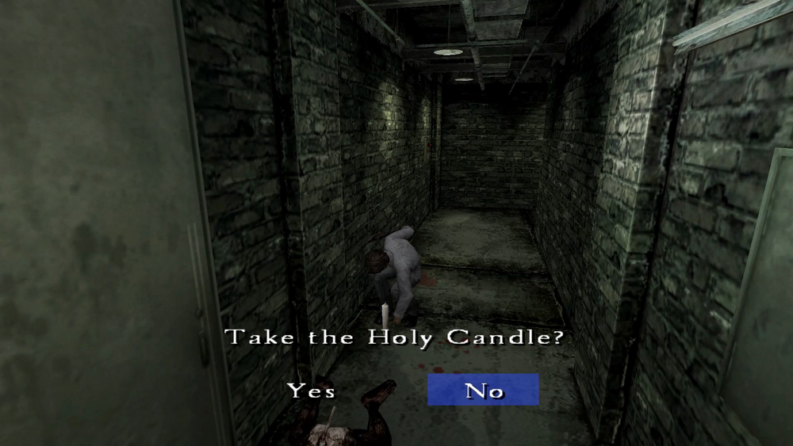

[SH4] Useless Trivia About Holy Candles

Holy Candles Aren't Just for Exorcism!?
![[SH4] Useless Trivia About Holy Candles](img/da16.png)
This is a mirror of the DeviantArt version linked above, provided as a backup and for easier access.

In Silent Hill 4, Holy candles are an essential item for exorcism, but they can also be used in some rather unusual ways, so I'll introduce those too (?).
Henry gets hooked on a mysterious ritual🕯️🕯️🕯️

✅ Holy Candles can be used in many places, and you can light several of them.
They can also be used as stylish room decor. Someone with better taste might be able to place them in a cooler way.


✅ If you have a lot of luggage, you can use them and throw them away.

✅ You can even let Gum Heads steal the candles, and they may then use them to attack you. If you beat them, you'll get each one back.



And of course, if you waste them like that, you won't be able to eliminate any hauntings. If you're aiming for the good ending, make good use of them. So don't go overboard!